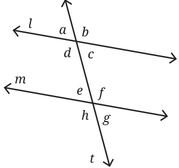
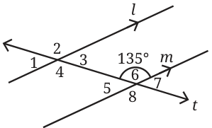
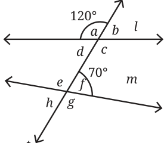
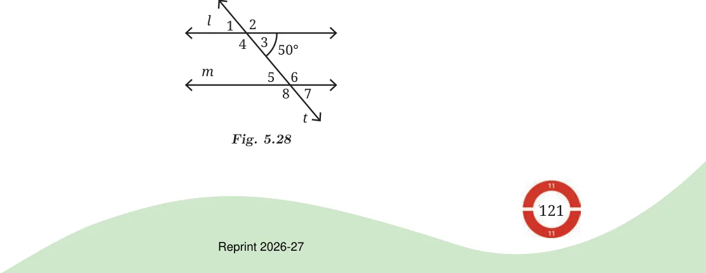
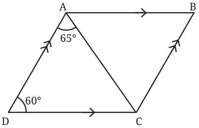
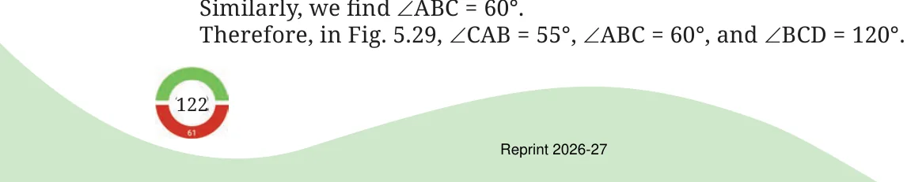

In Fig. 5.25, \(\angle d\) is called the alternate angle of \(\angle f\), and \(\angle c\) is the alternate angle of \(\angle e\).

You can find the alternate angle of a given angle, say \(\angle f\), by first finding the corresponding angle of \(\angle f\), which is \(\angle b\) and then finding the vertically opposite angle of \(\angle b\), which is \(\angle d\).
Activity 6
In Fig. 5.25, if \(\angle f\) is \(120 ^{\circ}\) what is the measure of its alternate angle \(\angle d\)? We can find the measure of \(\angle d\) if we know \(\angle b\) because they are vertically opposite angles. Remember, vertically opposite angles are equal. What is the measure of \(\angle b\)? It is \(120 ^{\circ}\) because it is the corresponding angle of \(\angle f\). So, \(\angle d\) also measures \(120 ^{\circ}\) . In fact, \(\angle f = \angle b\) irrespective of the measure of \(\angle f\). Why? Because \(\angle b\) is the corresponding angle of \(\angle f\). Similarly, \(\angle b = \angle d\) irrespective of the measure of \(\angle b\). Why? Because \(\angle d\) is the vertically opposite angle of \(\angle b\). So, it must always be the case that \(\angle f = \angle d\) Using our understanding of corresponding angles without any measurements, we have justified that alternate angles are always equal.
Alternate angles formed by a transversal intersecting a pair of parallel lines are always equal to each other.
Example 1: In Fig. 5.26, parallel lines l and m are intersected by the transversal t. If \(\angle 6\) is \(135 ^{\circ}\) , what are the measures of the other angles?

Solution: \(\angle 6\) is \(135 ^{\circ}\) , so \(\angle 2\) is also \(135 ^{\circ}\) , because it is the corresponding angle of \(\angle 6\) and the lines l and m are parallel. \(\angle 8\) is \(135 ^{\circ}\) , because it is the vertically opposite angle of \(\angle 6\). \(\angle 4\) is \(135 ^{\circ}\) because it is the corresponding angle of \(\angle 8\). \(\angle 2\) is \(135 ^{\circ}\) because is the vertically opposite angle of \(\angle 4\). So, \(\angle 2\), \(\angle 4\), \(\angle 6\), and \(\angle 8\) are all \(135 ^{\circ}\) . \(\angle 5\) and \(\angle 6\) are a linear pair, together they measure \(180 ^{\circ}\) . If \(\angle 6\) is \(135 ^{\circ}\) , then
\(\angle 5 = 180 - 135 = 45 ^{\circ}\)
We can similarly find out that \(\angle 1\), \(\angle 3\), and \(\angle 7\) measure \(45 ^{\circ}\) . Example 2: In Fig. 5.27, lines l and m are intersected by the transversal
- t.If \(\angle a\) is \(120 ^{\circ}\) and \(\angle f\) is \(70 ^{\circ}\) , are lines l and m parallel to each other?

Solution: \(\angle a\) is \(120 ^{\circ}\) , so \(\angle b\) is \(60 ^{\circ}\) because \(\angle a\) and \(\angle b\) form a linear pair. \(\angle b\) is a corresponding angle of \(\angle f\). If l and m are parallel, \(\angle b\) should be equal to \(\angle f\), however, they are not equal. Therefore, lines l and m are not parallel to each other as the corresponding angles formed by the transversal t are not equal to each other. Example 3: In Fig. 5.28, parallel lines l and m are intersected by the transversal t. If \(\angle 3\) is \(50 ^{\circ}\) , what is the measure of \(\angle 6\)?

Solution: \(\angle 3\) is \(50 ^{\circ}\) ; therefore, \(\angle 2\) is \(130 ^{\circ}\) , because \(\angle 2\) and \(\angle 3\) form a linear pair, and linear pairs always add up to \(180 ^{\circ}\) . \(\angle 2\) and \(\angle 6\) are corresponding angles, and they need to be equal since lines l and m are parallel. So, \(\angle 6\) is \(130 ^{\circ}\) . Angles \(\angle 3\) and \(\angle 6\) are called interior angles.
Is there a relation between \(\angle 3\) and \(\angle 6\)? You could try to find the relationship by taking different values for \(\angle 3\) and see what \(\angle 6\) is. Once you find a relation, try to justify it or prove that this relation holds always. You will find that the sum of the interior angles on the same side of the transversal always add up to \(180 ^{\circ}\) .
Example 4: In Fig. 5.29, line segment AB is parallel to CD and AD is parallel to BC. \(\angle DAC\) is \(65 ^{\circ}\) and \(\angle ADC\) is \(60 ^{\circ}\) . What are the measures of angles \(\angle CAB\), \(\angle ABC\), and \(\angle BCD\)? Solution: Let us observe the parallel lines AB and CD. AD is a transversal of these two lines.

We know that the sum of the interior angles formed by a transversal on a pair of parallel lines adds up to \(180 ^{\circ}\) . So \(\angle ADC + \angle DAB = 180 ^{\circ}\)
\(60 ^{\circ} + \angle DAB = 180 ^{\circ}\) . So \(\angle DAB = 120 ^{\circ}\) .
Can we find \(\angle CAB\) from this? \(\angle DAB = \angle DAC + \angle CAB\).
So \(120 ^{\circ} = 65 ^{\circ} + \angle CAB\). So \(\angle CAB = 55 ^{\circ}\) .
Let us observe the parallel line segments AD and BC. They are intersected by a transversal CD. So, \(\angle ADC + \angle BCD = 180 ^{\circ}\) , because they are interior angles on the same side of the transversal. Since \(\angle ADC\) is given as \(60 ^{\circ}\) , \(\angle BCD = 120 ^{\circ}\)
